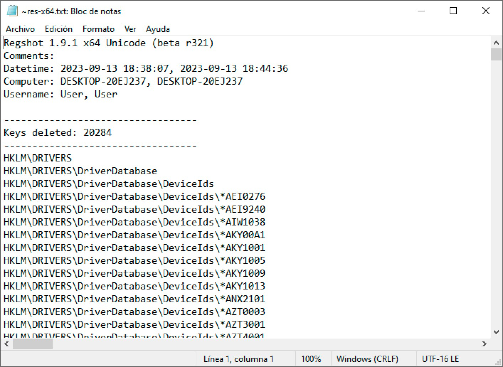
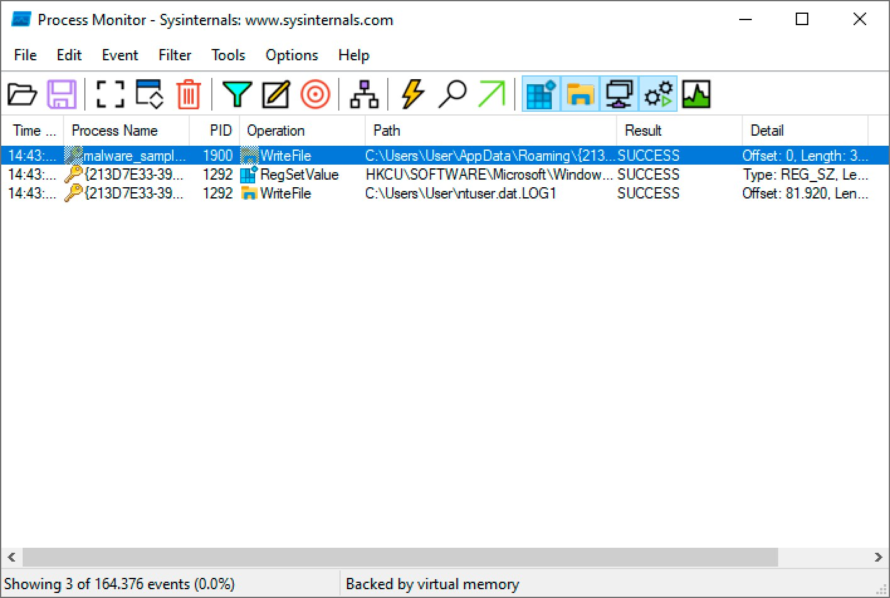
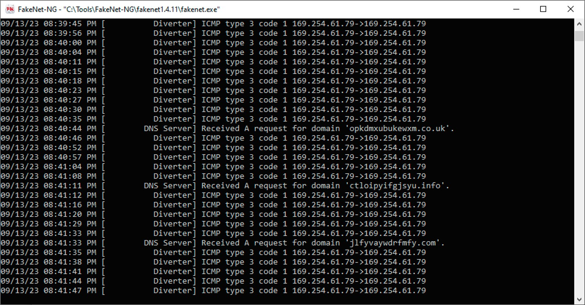
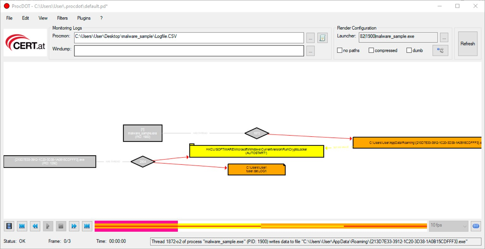

Análisis dinámico en Windows
Cuando el análisis estático del módulo 10 llega a su límite —una muestra empaquetada, cifrada u ofuscada que no revela gran cosa a simple vista—, el siguiente paso es observar qué hace el malware realmente: ejecutarlo en un entorno controlado y registrar, con detalle, cada proceso que crea, cada fichero que toca, cada clave de registro que modifica y cada conexión de red que intenta abrir.
1 Qué es el análisis dinámico y por qué complementa al estático
El análisis dinámico consiste en ejecutar la muestra sospechosa y monitorizar su comportamiento en tiempo real, en lugar de deducirlo a partir del fichero estático. Es complementario, no sustitutivo: un empaquetador puede ocultar casi toda la información útil al análisis estático, pero en cuanto el malware se ejecuta tiene que "desempaquetarse" y actuar en claro sobre el sistema, momento en el que el análisis dinámico puede observarlo directamente.
El precio de esa visibilidad es el riesgo: ahora sí se está ejecutando código malicioso de verdad, así que todo el proceso exige una preparación cuidadosa del entorno antes de lanzar nada.
2 Preparando el entorno de análisis
El análisis dinámico se realiza siempre sobre una máquina virtual dedicada, configurada con varias precauciones antes de ejecutar la muestra:
- Snapshot limpio: se guarda una instantánea del estado inicial de la VM (sistema recién instalado, sin la muestra) para poder revertir a un punto conocido después de cada análisis, sin arrastrar restos de ejecuciones anteriores.
- Adaptador de red host-only (o aislada): nunca se conecta la VM directamente a Internet ni a la red local sin control. Un adaptador host-only aísla la máquina de análisis del resto de la red, evitando que un gusano o un componente con capacidad de propagación salga de la VM y comprometa otros equipos.
- Carpeta compartida de solo lectura: si hace falta pasar la muestra u otros ficheros a la VM, se usa una carpeta compartida configurada en modo solo lectura, para que el malware no pueda escribir de vuelta hacia el sistema anfitrión.
- Captura de los resultados: antes de revertir el snapshot, se guardan capturas de pantalla, registros de las herramientas de monitorización y cualquier fichero de interés que el malware haya creado, ya que todo eso se perderá al restaurar el estado limpio.
3 Qué observar y la secuencia de análisis
El análisis dinámico se apoya en dos grandes frentes de monitorización: los eventos del sistema (procesos que se crean, ficheros que se leen o escriben, claves de registro que se modifican) y la captura de red (qué conexiones intenta abrir el malware y hacia dónde). Combinando ambos frentes con un procedimiento ordenado se obtiene una imagen completa del comportamiento de la muestra:
- Revertir la máquina virtual al snapshot limpio antes de empezar.
- Iniciar las herramientas de monitorización (procesos, ficheros, registro y red) antes de ejecutar la muestra.
- Tomar una instantánea inicial del sistema con Regshot ("1st shot").
- Copiar la muestra a la VM a través de la carpeta compartida de solo lectura.
- Ejecutar la muestra y dejarla actuar el tiempo necesario para observar su comportamiento.
- Observar en tiempo real la actividad capturada por las herramientas de monitorización.
- Tomar la instantánea final con Regshot ("2nd shot") y generar la comparación.
- Detener la captura de las herramientas de monitorización.
- Guardar todos los registros generados (capturas de Procmon, comparación de Regshot, tráfico de FakeNet) antes de perder el estado de la VM.
- Revertir la máquina virtual al snapshot limpio, dejándola lista para el siguiente análisis.
4 Herramientas del análisis dinámico
Cada frente de monitorización tiene sus propias herramientas especializadas; lo habitual es combinarlas todas durante un mismo análisis:
Procmon
Process Monitor (Sysinternals): registra en tiempo real la actividad de procesos, sistema de archivos y registro, con un potente sistema de filtros.
Regshot
Compara dos instantáneas del sistema (antes y después de ejecutar la muestra) y resume qué ficheros y claves de registro se crearon, modificaron o borraron.
FakeNet
Simula servicios de red (incluido un servidor DNS falso) para que el malware "crea" que está conectado a Internet, revelando a qué dominios o IP intenta conectarse.
ProcDOT
Toma los registros de Procmon (y, opcionalmente, una captura de red) y genera un grafo visual de toda la actividad, mucho más fácil de interpretar que miles de líneas de log.
5 Regshot y Procmon: ficheros, registro y procesos
Regshot funciona por comparación: se toma una primera instantánea del registro y el sistema de ficheros antes de ejecutar la muestra, se ejecuta el malware, y se toma una segunda instantánea al terminar. La herramienta genera entonces un informe con las diferencias exactas —claves creadas, modificadas o eliminadas— sin necesidad de estar observando la pantalla en tiempo real durante todo el proceso.

Procmon, en cambio, observa en directo: registra cada operación de proceso, fichero y registro con marca de tiempo, proceso responsable (PID incluido) y resultado. Con miles de eventos por segundo generados incluso por el propio sistema operativo, el filtrado es imprescindible —por ejemplo, limitando la vista a Process Name is el proceso de la muestra, o a operaciones concretas como WriteFile, SetDispositionInformationFile (borrado), RegSetValue, ProcessCreate, TCP o UDP. La captura se puede guardar en formato nativo PML o exportar a CSV para procesarla después con otra herramienta, como ProcDOT.

6 FakeNet y ProcDOT: red y visualización
Como la VM de análisis está deliberadamente aislada de Internet (sección 2), cualquier malware que intente resolver un dominio o conectarse a un servidor de mando y control se encontraría, en principio, con el vacío. FakeNet resuelve ese problema simulando los servicios de red que el malware espera encontrar —incluido un servidor DNS falso que responde a cualquier consulta—, de modo que la muestra "cree" que está conectada mientras el analista observa exactamente qué dominios intenta resolver y a qué intenta conectarse.

Con los registros de Procmon (y, si se ha capturado, el tráfico de red) ya guardados, ProcDOT los combina en un grafo visual de toda la actividad: procesos representados como nodos, y flechas que muestran qué proceso creó a qué otro, qué fichero escribió o qué clave de registro modificó, todo ello reproducible como una animación paso a paso. Es mucho más rápido de interpretar que revisar miles de líneas de log una a una, especialmente cuando el malware lanza varios procesos hijos o inyecta código en otros ya existentes.

7 Cómo encaja este bloque con el análisis de malware
El análisis estático y el análisis dinámico no compiten entre sí: se complementan. El estático es rápido, seguro y da una primera hipótesis sobre el fichero sin ningún riesgo; el dinámico confirma —o desmiente— esa hipótesis observando el comportamiento real de la muestra, a costa de una preparación más cuidadosa del entorno. Un analista experimentado combina ambos: empieza por lo estático para orientarse y decidir qué observar, y pasa al dinámico cuando necesita ver, con sus propios ojos, qué hace realmente el malware sobre un sistema Windows.